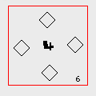
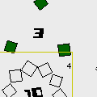

SpinOSC. version beta 0.1
View screenshot with explanations
|
||||||
Note: The "expert version" is intended to be used by expert users that have experience using and writing patches on PD, SC, OSW or MAX/MSP. If you are not familiar with this programs you should start using the "basic" version. The main difference is that the "windows basic" version includes and runs automaticly a distribution of PureData (www.pure-data.info).
Description
SpinOSC is an interface to programs such as Pure Data, Supercollider orOpen SoundWorld, that sends OSC messages. SpinOSC allows the useer to create rotating objects - spins - that trigger messages while thy spin. The number of messages they trigger depends on the number of boxes that each spin contains (1 to 10 at the moment). The messages are in OSC format (Read more about Open Sound Control protocol on http://cnmat.cnmat.berkeley.edu/OSC/ ).
The messages carry information about the properties of each spin such as: location, number of boxes, size, rotation speed etc... These properties can be easily controlled and changed by the user.
SpinOSC contains a patch example of the receiving end developed developed in Pure Data. This patch can be easily customizable for your own needs. OSC can be sent to many sound applications such as SuperCollider or Open Sound World. It is up to you to map the values you get from the Spins to control whatever value in the receiving end.
The Prefs file is a useful tool to customise the behaviour of the application for your own needs.